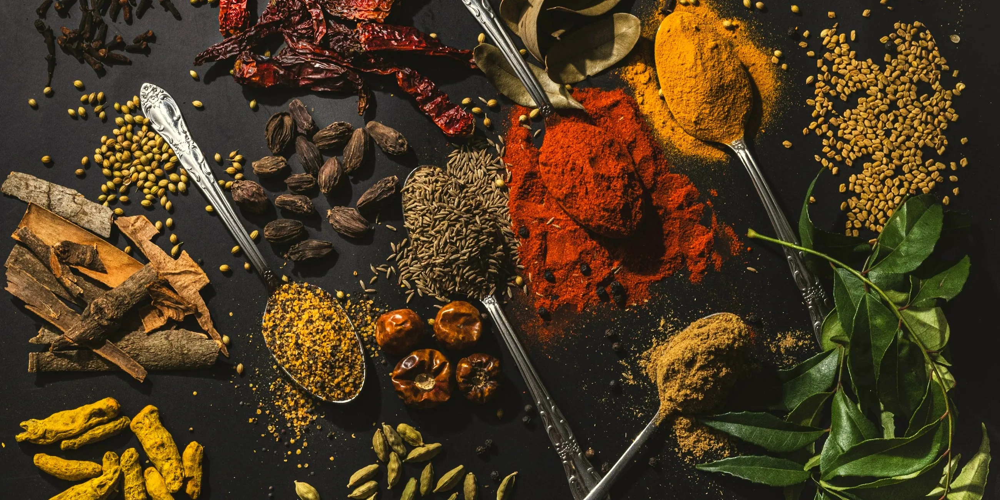
Vegetarian Flavors Across Continents
Slate & Saffron
BY DWON
Food from six continents. Written like a friend would.
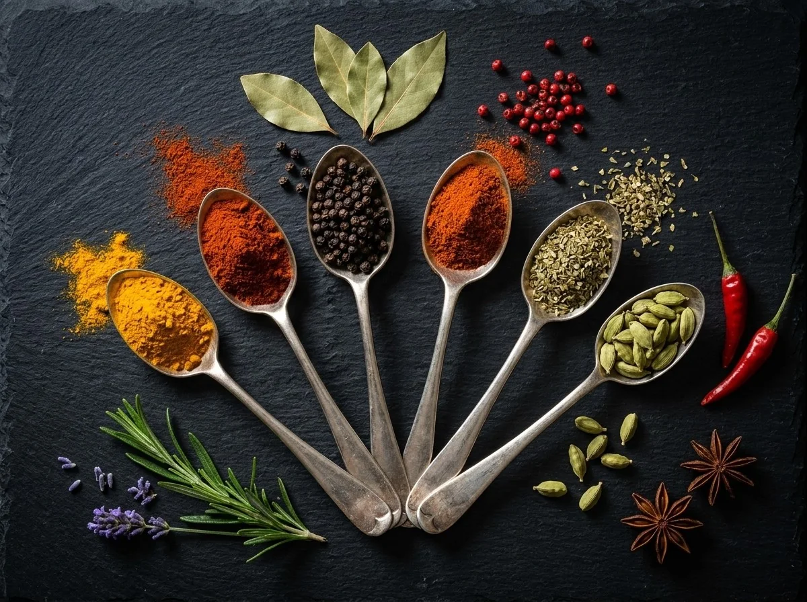
02 · Our story
One kitchen, six continents.
We collect vegetarian dishes from around the world and write them simply, with a desi swap for anything hard to find at home.
Check what's in your fridge →03 · Explore by continent
Six continents
Point at a panel to open it. Click to step inside.
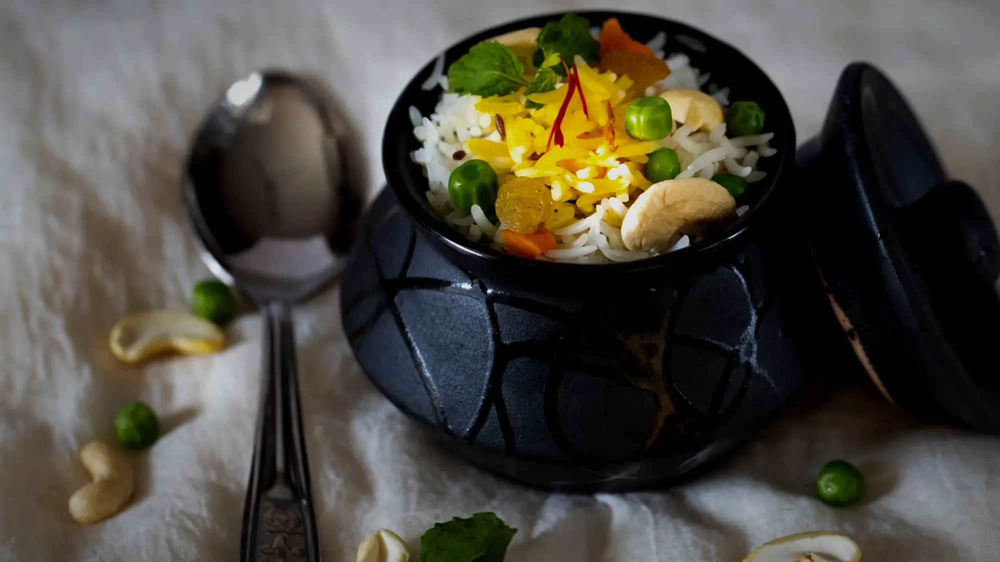
01AsiaSaffron, smoke and street stalls124 recipes →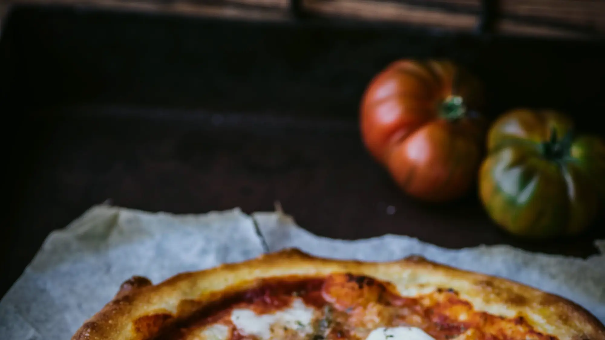
02EuropeTomatoes, herbs and slow lunches20 recipes →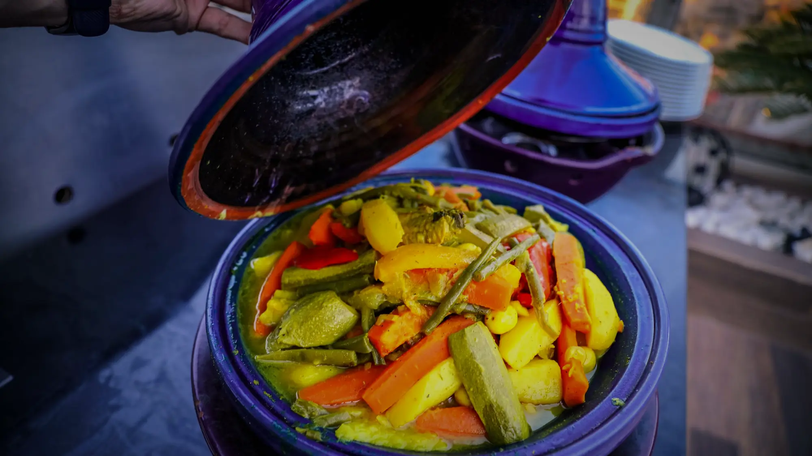
03AfricaClay pots and bold red spice20 recipes →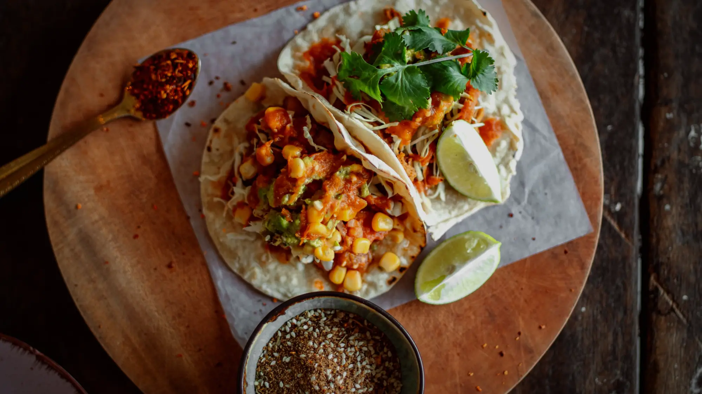
04North AmericaTacos, corn and maple mornings20 recipes →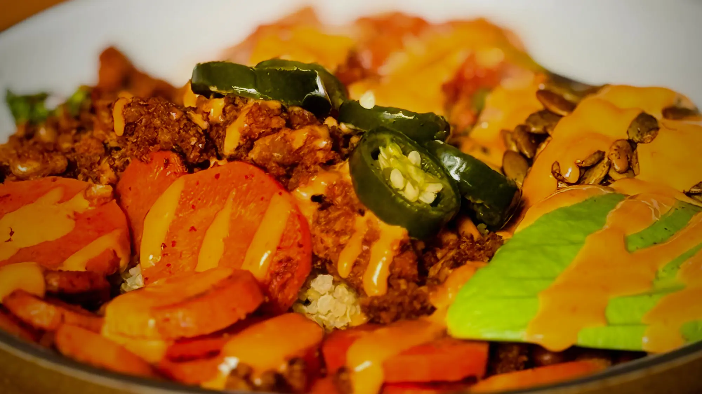
05South AmericaCorn, beans and Andean grains20 recipes →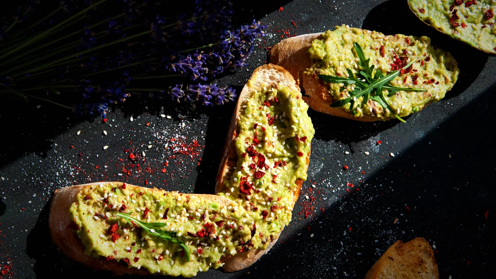
06Australia & IslandsSunlit coasts, tropical roots and island fire20 recipes →04 · Indian kitchen
117 Indian dishes, region by region
Dals, parathas, dosas, dhoklas and street food. Pick a region and cook.
- 01North IndianPaneer, dal and rich gravies40 dishes →
- 02South IndianDosa, idli and sambar14 dishes →
- 03GujaratiThalis, dhokla and undhiyu14 dishes →
- 04MaharashtrianMisal, pav and street spice14 dishes →
- 05RajasthaniDal, gatte and desert flavours17 dishes →
- 06BengaliPotato, poppy seed and mustard12 dishes →
- 07Street FoodChaat, pav and late-night snacks12 dishes →
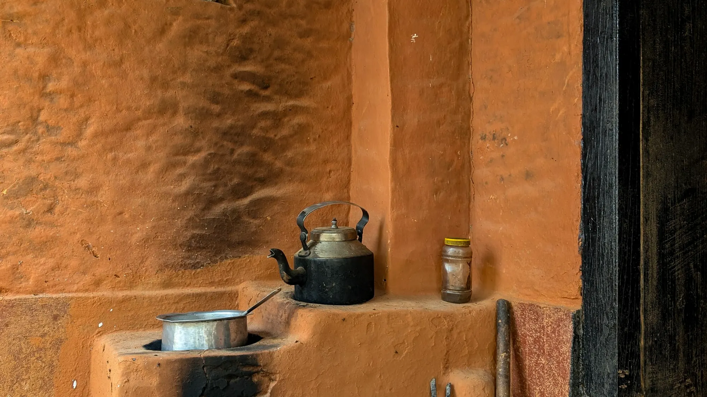
Punjabi kitchen
Punjab da Swaad
Ghee, makkhan te pyaar
Sarson da saag, makki di roti, parathe aur dal makhani. Seedha Punjab ke ghar se.
Punjabi recipes dekho
Chutney wali gali
Chutney Wali Gali
Har pradesh ki apni chutney. Mirch wali, meethi wali aur khatti wali, sab ek hi gali mein.
Chutneys dekho
05 · Pick by mood
What are you in the mood for?
Scroll on, or point at a mood. Click one to see its recipes.
- 01Quick in 20 MinutesDinner on the table before the chai cools.17 →
- 02Comfort FoodWarm bowls for slow evenings.60 →
- 03Spicy & BoldChilli, smoke and a little drama.14 →
- 04Healthy & LightFresh, bright and easy on the stomach.17 →
- 05Festive FavouritesDishes worth cooking for a crowd.47 →
- 06One-Pot MealsOne pan, less washing up.46 →
06 · Seasonal collections
Cook with the season
- Mar – Jun
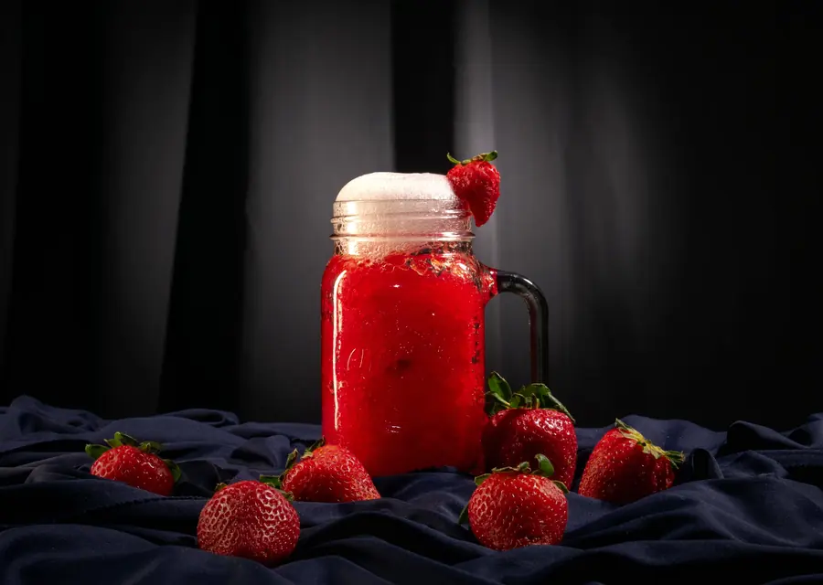
Summer CoolersCold bowls, salads and drinks.41 recipes → - Jul – SepMonsoon SnacksFried, hot and made for rainy evenings.32 recipes →
- Oct – Nov
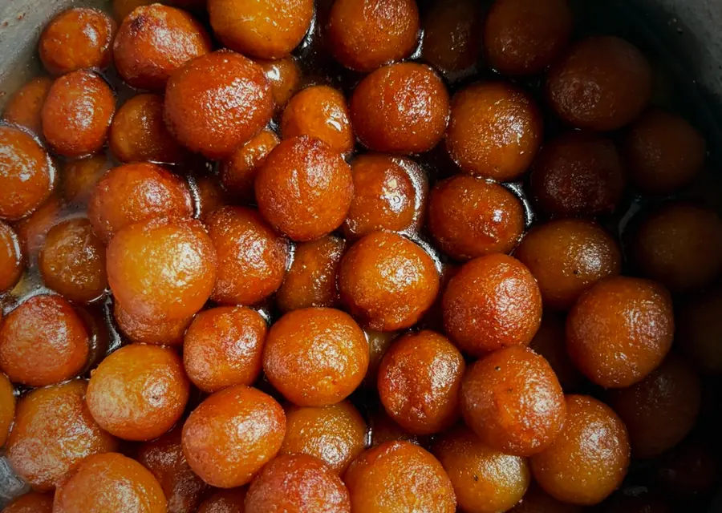
Diwali SpecialsRich dishes and sweets for the festival.44 recipes → - Dec – Feb
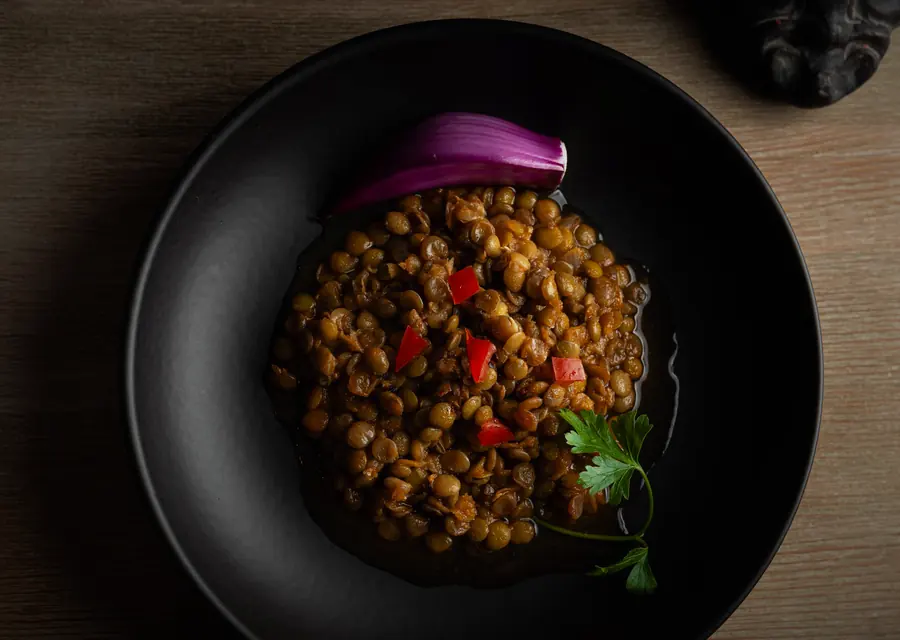
Winter Comfort FoodStews, dals and bakes that warm you up.43 recipes →
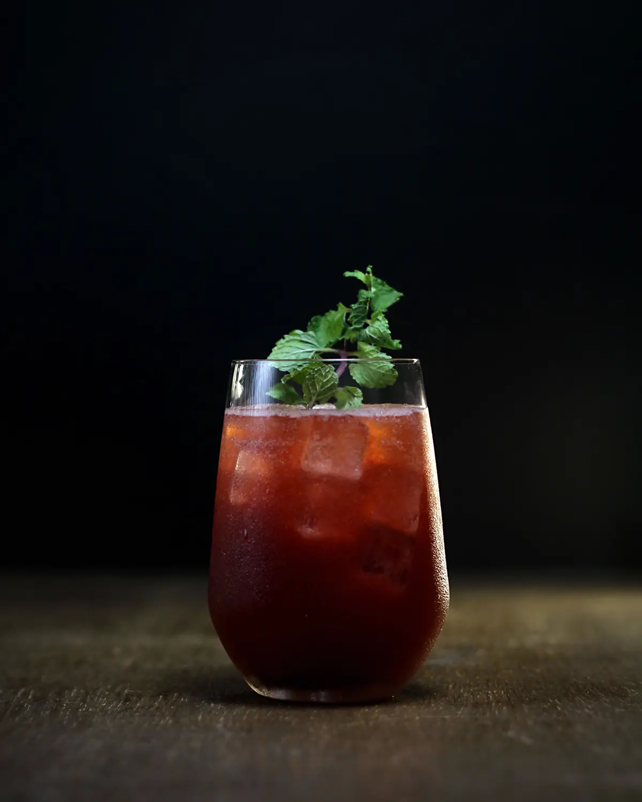
08 · Tonight
What's in your fridge?
Tap what you have. We show what you can cook right now.
Open the fridge →